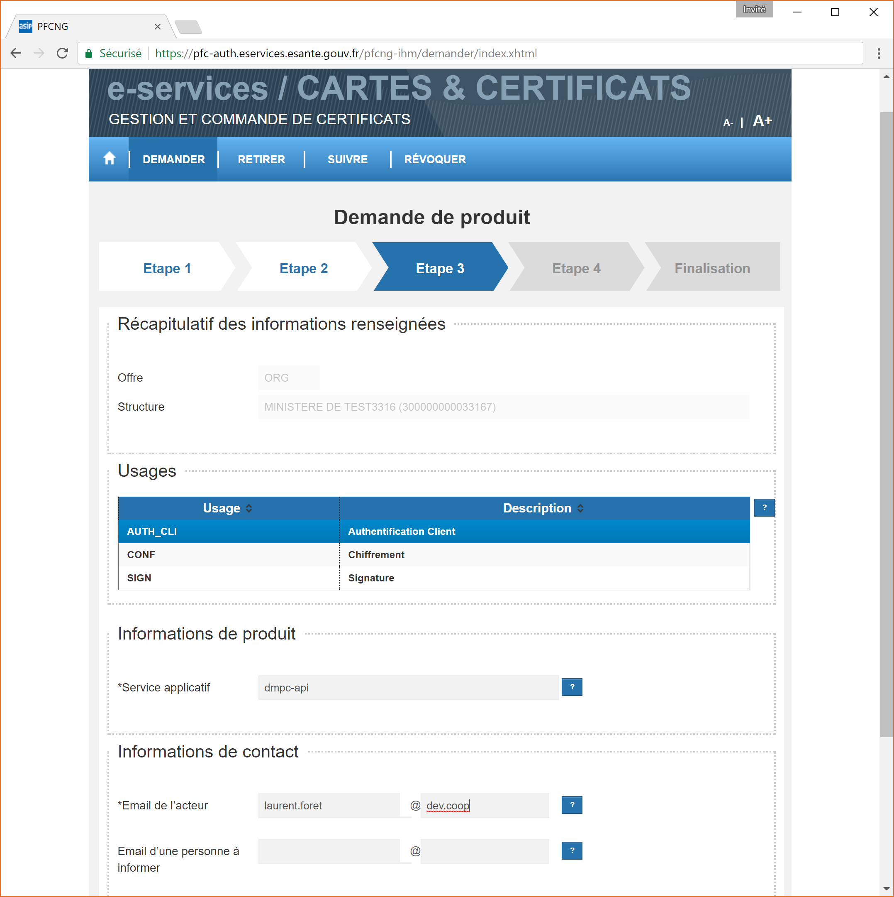
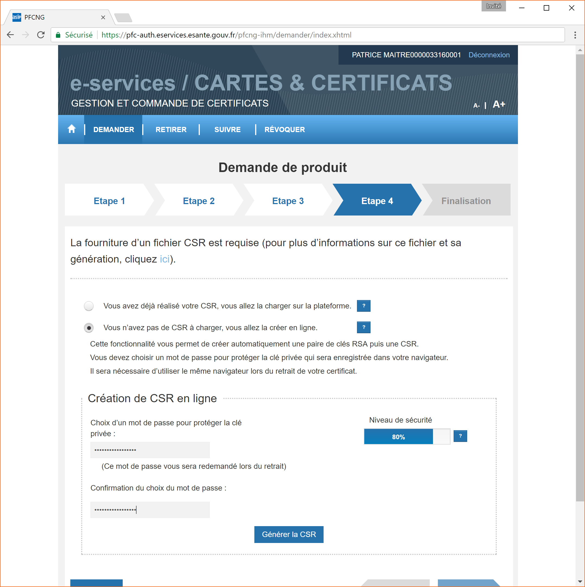

Obtention de certificats serveurs en authentification Indirecte
Une nouvelle IGC Santé a été mise en place par la CNAMTS courant 2016 : http://integrateurs-cps.asipsante.fr/IGC-Sante
Afin d’utiliser le connecteur DMPC-API en mode authentification indirecte, il vous faut obtenir des certificats serveurs provenant de cette autorité. Pour celà après avoir commandé des cartes CPS vous pouvez faire une demande à partir d’un téléservice dont la procédure est décrite ici.
Procédure pour les les Établissements
Pour obtenir, les certificats et clés nécessaires pour la connexion au DMP en authentification indirecte, il faut que votre établissement soit enregistré au FINESS (Fichier National des Établissements Sanitaires es Sociaux) : http://finess.sante.gouv.fr/fininter/jsp/index.jsp
Les personnes pouvant remplir les conditions d’obtentions des certificats sont décrites dans le document de l’ANS : Procédure DMP - Structures salariées
Procédure Technique
Il est possible de les commander sur un site web mis à disposition par l’ANS. Il s’agit d’un service permettant la commande de certificats et cartes :
https://pfc.eservices.esante.gouv.fr
Pour pouvoir y accéder il faut se connecter avec un lecteur de cartes CPS configuré et une carte CPA autorisée au préalable :

Certificats et clés d’authentification
Demander
Étape 1:

Étape 2:
RAS, il s’agit d’un écran de recherche pour les demandes antérieures. Cliquer sur “Demander un nouveau produit”
Étape 3:
Il faut renseigner :
- l’usage : AUTH_CLI
- le nom du service (nom du logiciel) qui va accéder au DMP,
- son adresse email (utiliser plus tard pour envoyer une confirmation)

Étape 4 :

Pour cette étape le plus simple est de générer la CSR sur le site, mais pas obligatoire.
- Saisir un mot de passe assez fort pour convenir au service, et sauvegarder le car il sera demandé lors de la récupération du certificats P12, ainsi que pour configurer la DMPC-API.
- Cliquer sur “Générer la CSR”, puis “Finaliser”
Étape 5 :
Vous recevez un email de confirmation de la demande à l’adresse (correspondant à la carte CPS enregistrée, ou à l’email saisie à l’étape 3, TOCHECK) :

Récupérer
Vous recevez un deuxième mail contenant un lien permettant de récupérer le certificat sur ce même site.
Étape 2:
Saisir un nouveau mot de passe pour les révocations (non utilisé dans l’API)
- Finalisation
Le certificat/clé (p12) a un nom qui doit ressembler à asip-p12-EL-TEST-ORG-AUTH_CLI-20170603-173116.p12
Certificats et clés de signature
Pour la signature, il faut faire une autre demande avec le même process, à l’exception de l’étape 3 ou il faudra demander un certificat de signature : Usage SIGN

Configuration de la DMPC-API
Le paramètrage de ces certificats pour la DMPC-API se trouve dans le application.yml
- dmpc.url.prefix
- dmpc.smime.p12.path
- dmpc.smime.p12.password
- dmpc.ssl.p12.path
- dmpc.ssl.p12.password
- dmpc.ssl.trust.path
Exemple de configuration à fournir :
dmpc:
# informations relatives au certificat smime
smime:
p12:
path:
#./smime.p12
A_renseigner
password:
A_renseigner
# informations relatives au certificat ssl
ssl:
p12:
path:
#ssl.p12
A_renseigner
password:
A_renseigner
# Contient les certificats serveurs autorisés pour authentification mutuelle
trust:
path:
truststoreIgcSante-EL-ORG.jks